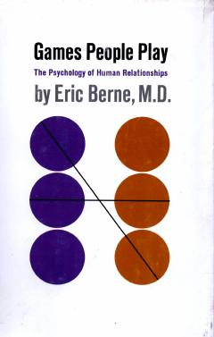

GPInsonlararo munosabatlardagi yashirin psixologik o'yinlar va ularning tahlili haqida fundamental asar.
Ushbu kitob insonlar o'rtasidagi ijtimoiy o'zaro munosabatlarni tahlil qiluvchi tranzaksion tahlil nazariyasini taqdim etadi. Muallif kundalik hayotda odamlar ongsiz ravishda o'ynaydigan turli xil psixologik o'yinlarni va ularning munosabatlarga ta'sirini batafsil yoritib beradi.